Mburo Safari Lodge - Enjoy stunning views of Lake Mburo and excellent wildlife sightings right from your room. The lodge offers comfortable rooms and an authentic safari experience.
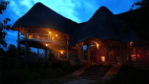Rwakobo Rock Lodge - A unique eco-lodge offering spectacular views of Lake Mburo and the surrounding park. Experience luxury in a natural setting with a range of activities.
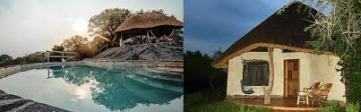Katara Lodge - A luxurious lodge with breathtaking views of the Kazinga Channel. The perfect place to relax after a day of safari adventures.
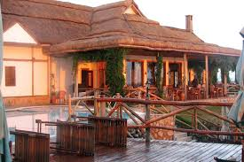Mweya Safari Lodge - Located on the Mweya Peninsula, this lodge offers panoramic views and exceptional service in the heart of Queen Elizabeth National Park.
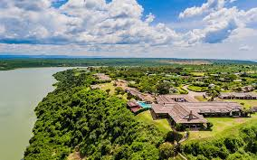Bwindi Lodge - Nestled at the edge of Bwindi Impenetrable Forest, offering luxurious rooms and the chance to see gorillas up close.
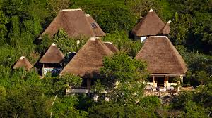Silverback Lodge - Situated near the gorilla trekking starting points, this lodge provides a comfortable stay with stunning views of the forest.
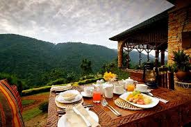Paraa Safari Lodge - Overlooking the Nile River, this lodge provides an excellent base for exploring Murchison Falls National Park with luxurious rooms and guided tours.
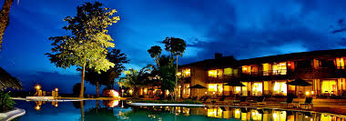Red Chilli Rest Camp - A budget-friendly option with a great location, offering basic accommodations and easy access to the park.
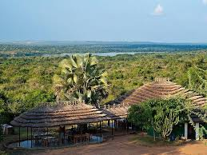Mountains of the Moon Hotel - Located in Fort Portal, this hotel offers a comfortable stay with views of the Rwenzori Mountains and easy access to the park.
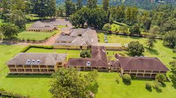Rwenzori View Guesthouse - A cozy guesthouse providing excellent service and a convenient location for trekking the Rwenzori Mountains.
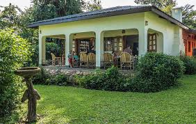Kidepo Savannah Lodge - A luxurious lodge offering stunning views of the Kidepo Valley and an authentic safari experience.
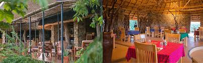Apoka Safari Lodge - Located in the heart of Kidepo Valley National Park, providing luxury accommodations and excellent wildlife viewing opportunities.
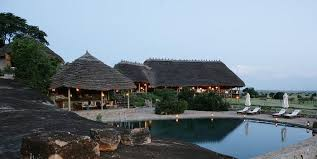